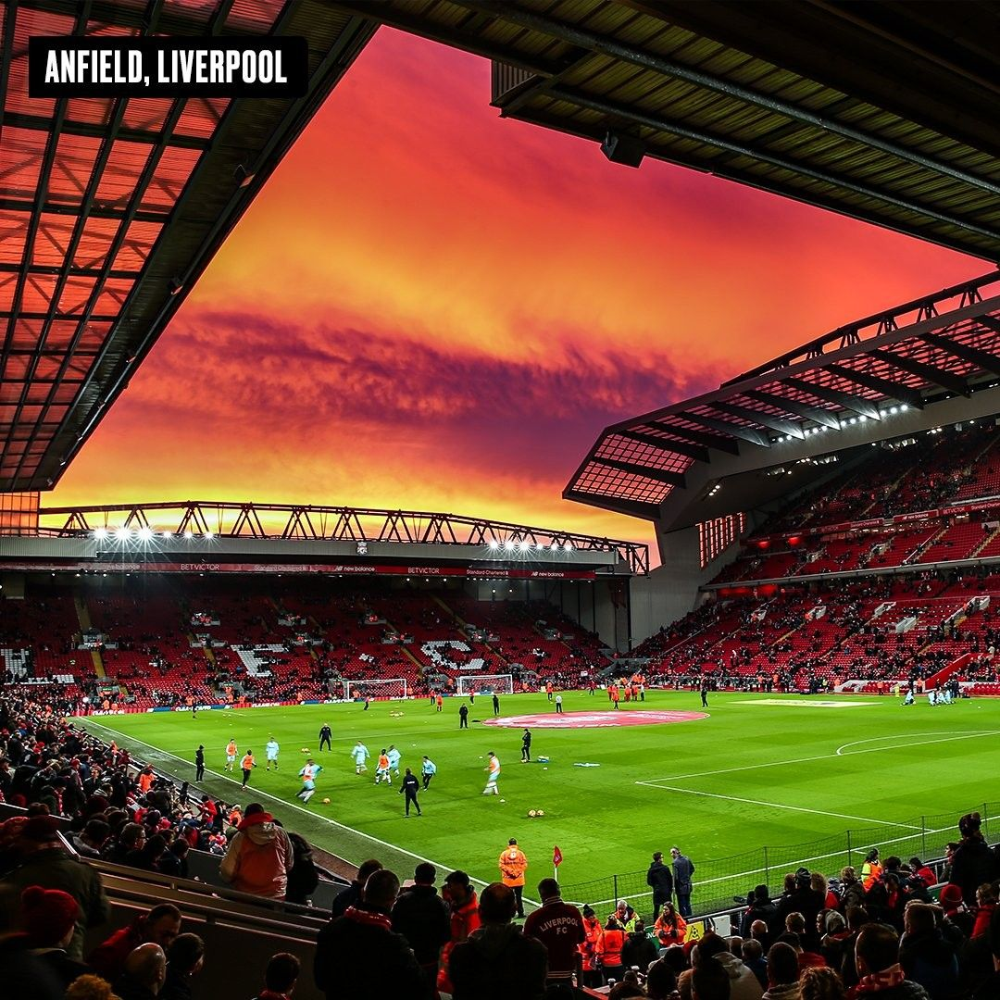
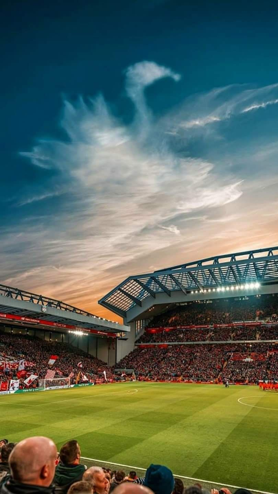

|
| 安菲尔德球场 |
|  | 历史沿革
球场结构
|
球场纪录与荣誉
球场氛围与文化
安菲尔德球场的氛围热烈而独特，球迷们的热情与激情在这里得到了充分的释放。在比赛日，球场内人声鼎沸，球迷们挥舞着球队的旗帜和围巾，高唱着利物浦队歌，为球队加油助威。无论是主场还是客场球迷，都能在这里找到属于自己的归属感。当利物浦队取得进球或赢得胜利时，整个球场都会陷入一片欢腾，球迷们的欢呼与呐喊声此起彼伏，形成了一首雄浑壮阔的交响乐。 安菲尔德球场的文化底蕴深厚，它见证了利物浦足球俱乐部的辉煌历史与传奇故事。球场内的每一块草皮、每一座看台都承载着球队的历史与荣誉。KOP看台是安菲尔德球场最具标志性的看台之一，它专属于忠实的利物浦球迷，是球队精神的象征。球迷们在这里传承着球队的传统与文化，他们通过歌唱、欢呼和呐喊来表达对球队的热爱与支持。 此外，安菲尔德球场还承载着利物浦城市的体育文化。作为利物浦的主场，安菲尔德球场不仅是球队的象征，更是城市的骄傲。在这里，足球不仅仅是一项运动，更是一种文化、一种信仰。球迷们通过观赛、参与球队活动等方式，与球队建立了深厚的情感联系，形成了独特的足球文化氛围。 |
 |
 |
返回主页 |